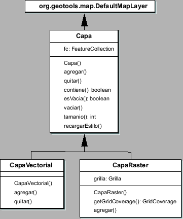

Siguiente: El paquete raster
Subir: Arquitectura de paquetes
Anterior: El paquete proyecto
Índice General
Como se vio en la sección 6.2, las aplicaciones GIS manejan el
concepto de capas (layers). En el caso de SAPO, se
definen diferentes capas que se superponen para formar el denominado
Mapa, una entidad de suma importancia pues engloba los datos
de la topología del terreno junto con la información de la ubicación
de los sitios, haciendo posible el despliegue en pantalla de toda
esa información bajo un único sistema de coordenadas.
Para implementar dichas capas se crearon las clases
CapaRaster y CapaVectorial, con algunos métodos útiles
para el manejo de cada uno de los tipos de datos GIS explicados en
la sección 6.2.1(ver diagrama 8.4). Cada
capa está constituida por una
org.geotools.feature.FeatureCollection, es decir, un conjunto
de features, y debe tener un estilo asociado a fin de poder ser
desplegada en pantalla.
El estilo (org.geotools.styling.Style) define las reglas que
deben seguirse en la representación de los componentes de la capa.
Por ejemplo si los mismos son polígonos, establece el color del área
interior así como el color y el grosor de las líneas que componen el
borde. Los estilos de cada una de las diferentes capas están
definidos en un sub-paquete llamado capas.estilos.
Figura 8.4:
Diagrama parcial de clases del paquete
capas
|

|
Se creó la interfaz ElementoCapa que deberán implementar
todos aquellos objetos que pretendan ser añadidos a una capa. Dicha
interfaz contiene el método getFeature, que debe devolver un
feature, capaz de ser agregado a la FeatureCollection que constituye
la capa. Las clases que implementan dicha interfaz son: Grilla,
Manzana, Edificio y Sitio.
Siguiente: El paquete raster
Subir: Arquitectura de paquetes
Anterior: El paquete proyecto
Índice General
SAPO